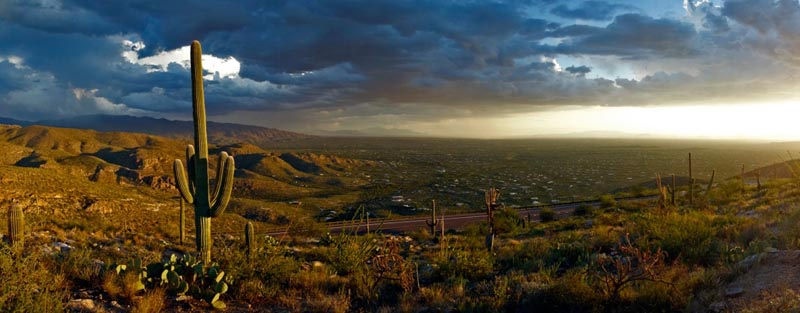

Investigating North American Monsoon Variability in the Southwestern USA using Instrumental and Tree-Ring Data
| Background |
| Documents & Data |
|  |
Home |
Welcome to the homepage of the Monsoon Project, a collaborative, multi-disciplinary effort to learn more about North American monsoon climate variability using instrumental and tree-ring data. The project is focused on the American Southwest, with particular emphasis on Arizona and New Mexico. Our research Group is based at the University of Arizona and is funded by the National Science Foundation, grant number 0823090. Arizona Public Media produced this video about the UA LTRR Monsoon Project:
Other media coverage: American Geophysical Union: Loss of summer rains stoked long droughts in SouthwestUniversity of Arizona News: Monsoon failure key to long summer droughts in Southwest |
 |